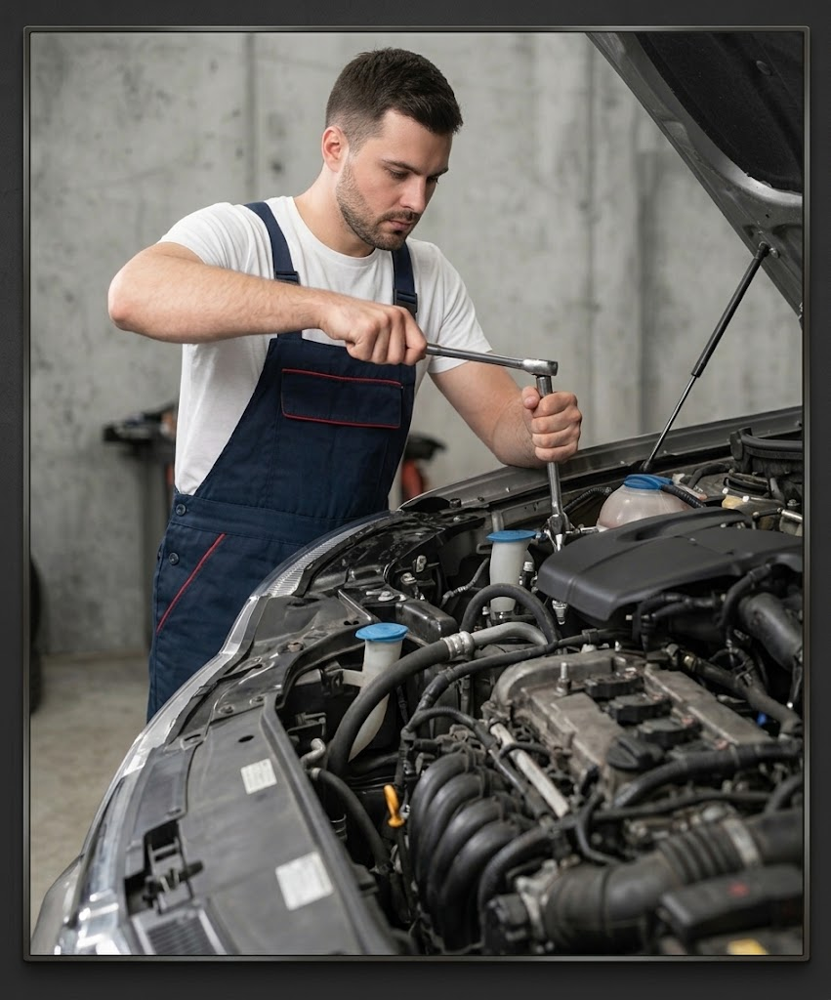
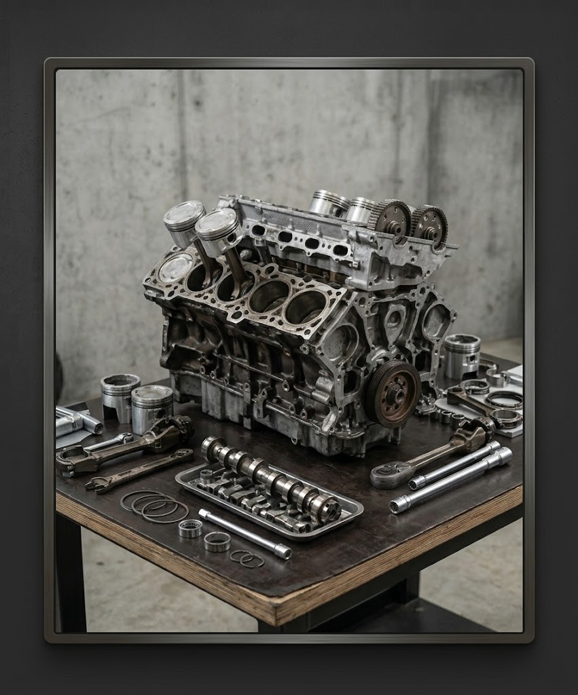
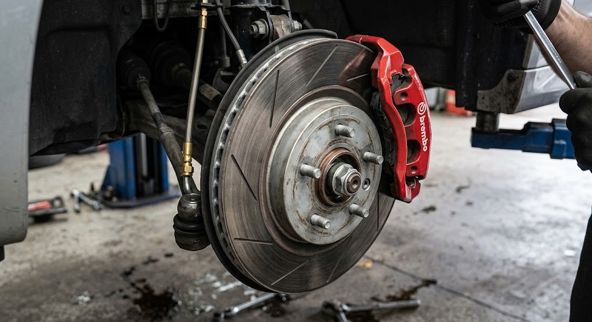

Bem-vindo à AutoTech
O objetivo do sistema é automatizar a gestão da oficina mecânica, facilitando o cadastro de veículos e a emissão de Ordens de Serviço (OS). O sistema permite separar os custos de peças e mão de obra, calcular automaticamente um acréscimo de 20% na mão de obra para veículos importados e restringir as formas de pagamento ao modelo à vista, evitando pagamentos fiados ou créditos pendentes.
Principais funcionalidades
- Cadastro simplificado de veículos.
- Cadastro das informações dos clientes.
- Emissão de Ordens de Serviço (OS).
- Separação dos custos de peças e mão de obra.
- Cálculo automático dos valores dos serviços.
- Acréscimo de 20% na mão de obra para veículos importados.
- Pagamento somente à vista.
- Bloqueio de pagamentos fiados ou crédito pendente.
- Interface simples e rápida para atendimento no balcão.
Serviços da oficina

Revisão de Motor

Troca de Óleo

Freios

Alinhamento e Pneus

Diagnóstico
Preços dos serviços
| Serviço | Descrição | Preço |
|---|---|---|
| Troca de óleo | Troca de óleo e filtro | R$ 150,00 |
| Alinhamento | Alinhamento das rodas | R$ 100,00 |
| Balanceamento | Balanceamento das quatro rodas | R$ 120,00 |
| Revisão de freios | Inspeção do sistema de freios | R$ 180,00 |
| Diagnóstico eletrônico | Verificação com scanner automotivo | R$ 200,00 |